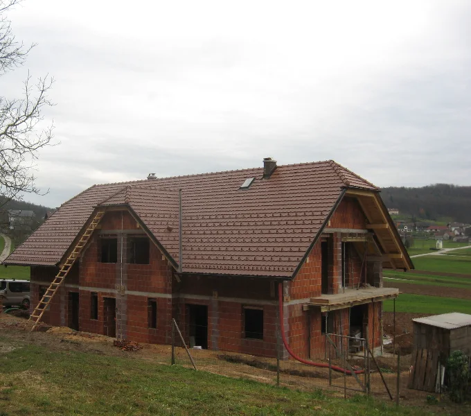
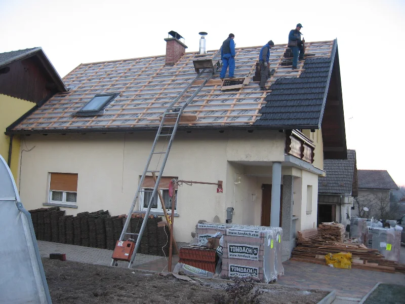
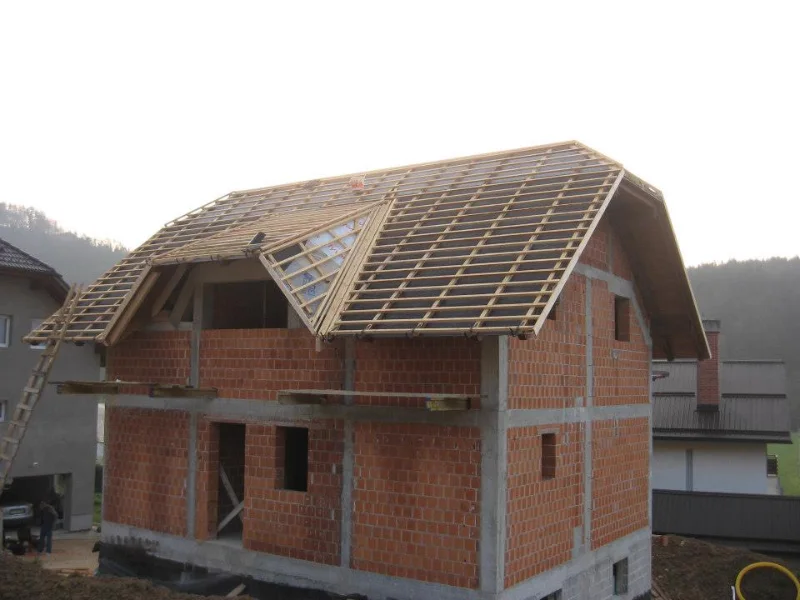
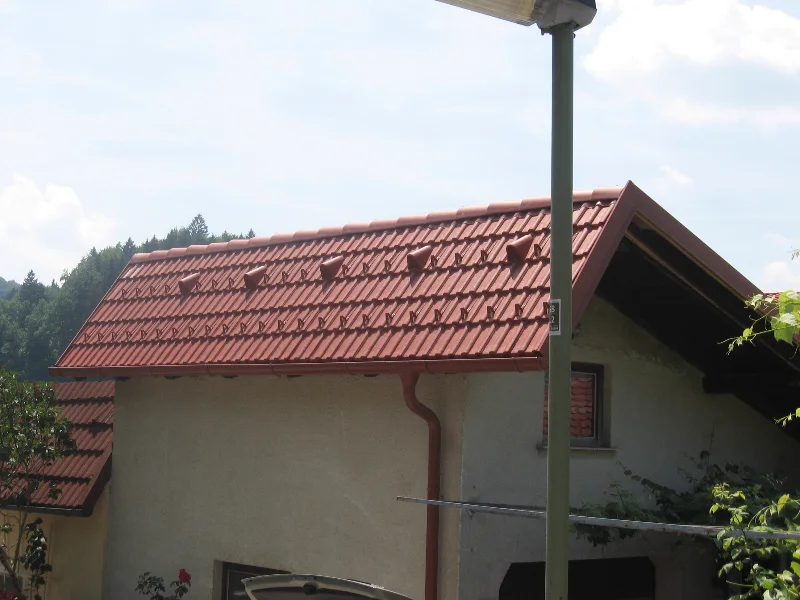
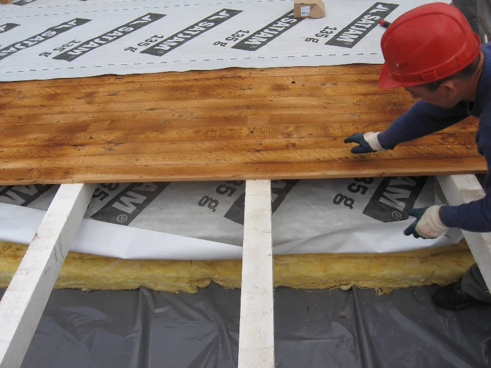
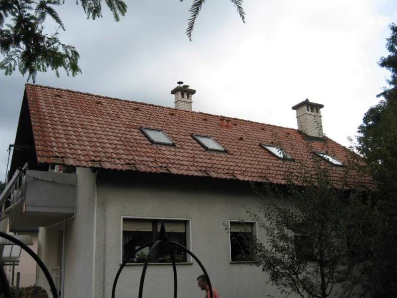
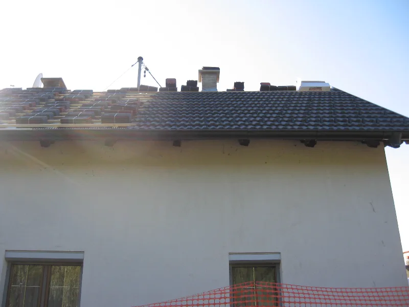
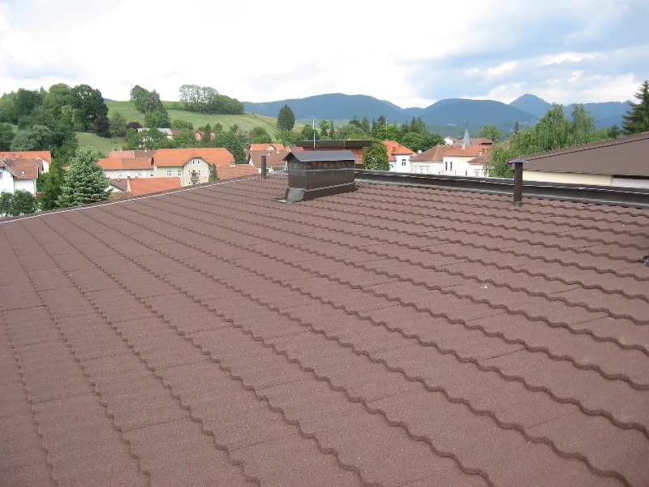
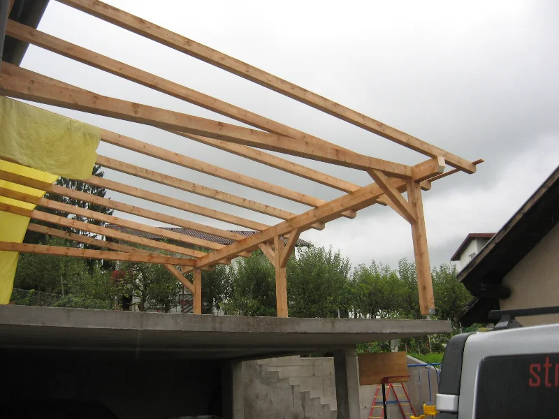
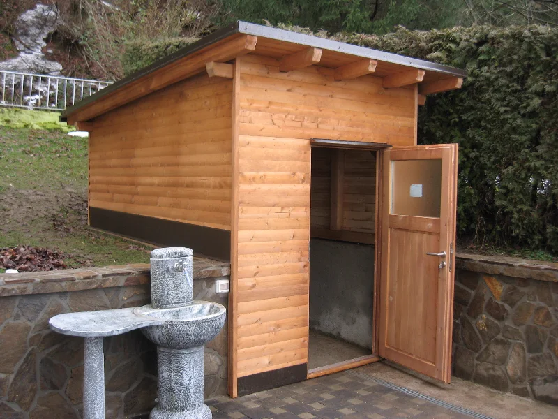

Tesarstvo
- lesene strešne konstrukcije
- nadstreški za avtomobile in terase
- brunarice, vrtne ute, vrtni paviljoni
- izdelki iz masivnega lesa
Smrekov les, zaščiten z impregnacijo proti insektom in glivam; po želji lazurni premaz.
Krovik izdela leseno ostrešje, položi kritino in zaključi streho z žlebovi in obrobami. Strankam svetuje pri izbiri in jim po navedbah na svoji strani brezplačno pripravi dokumentacijo za nepovratna sredstva Ekosklada.

Tesarstvo in krovstvo Krovik, Izet Kulanić s.p., je po lastnih navedbah na trgu od leta 2011. Glavnina dela poteka na deloviščih po vsej Sloveniji in tudi v Avstriji, na sedežu v Velenju pa nastajajo projekti energetskih prenov, popisi del in dokumentacija za Ekosklad.
Podjetje uporablja certificirane materiale, dela v skladu s predpisi o varnosti in zdravju pri delu ter v dogovorjenih rokih. Za celovito rešitev na enem mestu sodeluje s preverjenimi poslovnimi partnerji.
"Energijsko varčna streha"Vodilo podjetja, kot ga navaja na svoji strani.



Smrekov les, zaščiten z impregnacijo proti insektom in glivam; po želji lazurni premaz.

Vrsto kritine svetujemo glede na lego objekta, vremenske vplive in naklon strehe.

Pocinkana pločevina, aluminij ali baker.
Na podlagi lege objekta, vremenskih vplivov in naklona strehe svetujemo optimalno vrsto kritine. Strešna okna vgrajujemo po zahtevah proizvajalca.

| Opečna kritina | Tondach, Creaton |
|---|---|
| Betonska kritina | Bramac, Polak |
| Jeklena kritina | Gerard, Hosekra, Decra, Trimo |
| Vlaknocementna kritina | Esal |
| Pločevinasta kritina | po meri objekta |
| Bitumenska kritina | Tegola |
Za toplotno izolacijo strehe ali podstrehe lahko pridobite spodbudo Slovenskega okoljskega javnega sklada. Krovik vam svetuje in za vas pripravi vso potrebno dokumentacijo za vlogo. Aktualne pogoje preverite na ekosklad.si.
Vprašajte za energetsko prenovo






Projekti v Velenju, Šoštanju, Pesju, Šmartnem ob Paki, Ponikvi pri Žalcu, Sevnici, Ljubljani, Medvodah, Mariboru, Štanjelu, Vranskem, Škofljici in v Rudnu v Avstriji.
Vzorce kritin in strešnih sistemov si lahko ogledate pri nas. Pokličite in dogovorimo se za obisk.